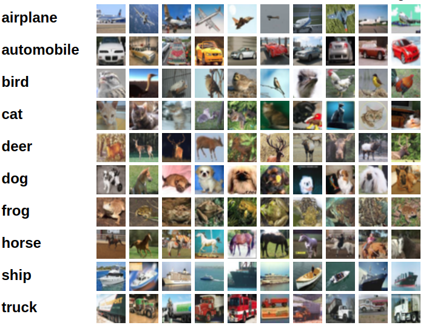

CIFAR 数据集
CIFAR
=CIFAR=1 是 Alex Krizhevsky 等人搜集构建的一个图像分类数据集。共有两个数 据集 CIFAR-10 和 CIFAR-100 。命名中的数字表示的是数据集 label 的个数。
CIFAR 是相对来说比较小的一个数据集，输入的图像分辨率为 32*32 彩色图片，并且数
据有 60K 样本。50K 组成训练集，10K 为测试集。数据集比较适合进行教学和进行算法
验证。
那么详细分别介绍一些两个数据集。
CIFAR-10
CIFAR-10 总共有 10 类标签组成，每个标签下有 6K 的样本。整个数据集被分成了 5 个
训练批次和一个测试批次。测试批次是从每一个标签中随机抽取的 1K 个样本。测试批次是剩
下的图片随机组成的，所有批次中不是每个标签下样本的数量相等。

标签是互斥的，即一张图像如果属于 truck ，那么就不会再属于 automobile 。
下载
版本 |
大小 |
md5sum |
| CIFAR-10 python version | 163MB | c58f30108f718f92721af3b95e74349a |
| CIFAR-10 Matlab version | 175MB | 70270af85842c9e89bb428ec9976c926 |
| CIFAR-10 binary version(for c) | 162MB | c32a1d4ab5d03f1284b67883e8d87530 |
基准结果
Rodrigo Benenson 非常赞的搜集很多数据集上的相应分类结果，其中包括 CIFAR。具体 可以参考：image classification。
CIFAT-10-kaggle-leaderboard kaggle 上有关于 CIFAR-10 的竞赛模型排名。
数据使用
- Python / Matlab 版本
Python 版本和 Matlab 版本的数据集的格式一样。这里主要描述 Python 版本。
整个数据集包含 6 个文件：5 个训练批次 data\_batch\_[1-5]和 1 个测试集 test\_batch。每个文件都是 使用 cPickle 打包的 pickled 文件。如下为 Python2 版本 打开文件，并返回对应的字段结构：
def unpickle(file): import cPickle with open(file, 'rb') as fo: dict = cPickle.load(fo) return dict
Python3 版本：
def unpickle(file): import pickle with open(file, 'rb') as fo: dict = pickle.load(fo, encoding='bytes') return dict
加载文件后，返回的字典结构包含如下：
-
data - 10000*3072 的
numpy数组，数组数据类型为 uint8.每一行为一个对应 的 32*32*3 彩色图像。前 1024 个数据为 Red 通道，中间 1024 个数据 为 Green 通道，后 1024 个数据为 Blue 通道。图像是以行为前存储的， 所以前 32 个数据为图像第一行的 Red 通道。所以整个格式是[C,H,W]。 -
labels - 10000 个在[0-9]之间的标签数据。
数据集包含其他文件：
batches.meta。该文件也是一个 dict 文件：-
label_names - 具有 10 个有意义名字的数组，和标签数据对应。
-
- 二进制版本
二进制版本的数据集包含 5 个训练批次文件 data\_batch\_[1-5].bin 和测试批次 test\_batch.bin。每个文件的格式为：
<1 * label><3072 * pixel> .... <1 * label><3072 * pixel>
也就是说第一个字节为当图像的标签。紧跟着的是 3072 字节，为对应图像的像素数据。 前 1024 个字节为 Red 通道，中间 1024 个字节为 Green 通道，最后的 1024 个字节 为 Blue 通道。并且以行优先存储，即前 32 个字节为图像第一行的红色通道数据。
每个文件包含 10000 个这样 3073 字节长的数据样本，并且样本之间没有分隔符，那 么也就是说文件长度为 30730000B。
同样，包含 batches.meta.txt 文件，该文件每行对应为标签的 ASCII 字符串。
CIFAR-100
CIFAT-100 和 CIFAR-10 基本相似，但是包含 100 个标签和每个标签下只有 600 个
样本。也就是说训练每个标签下采用 500 个训练，100 个测试。100 个标签分组成了 20 个
父标签，每个样本都有一个精准的标签和一个父标签。
下载
| Version | Size | md5sum |
| CIFAR-100 python version | 161MB | eb9058c3a382ffc7106e4002c42a8d85 |
| CIFAR-100 Matlab version | 175MB | 6a4bfa1dcd5c9453dda6bb54194911f4 |
| CIFAR-100 binary version(for c) | 116MB | 03b5dce01913d631647c71ecec9e9cb8 |
其他资料
Learning Multiple Layers of Features from Tiny Images By Alex Krizhevsky, 2009